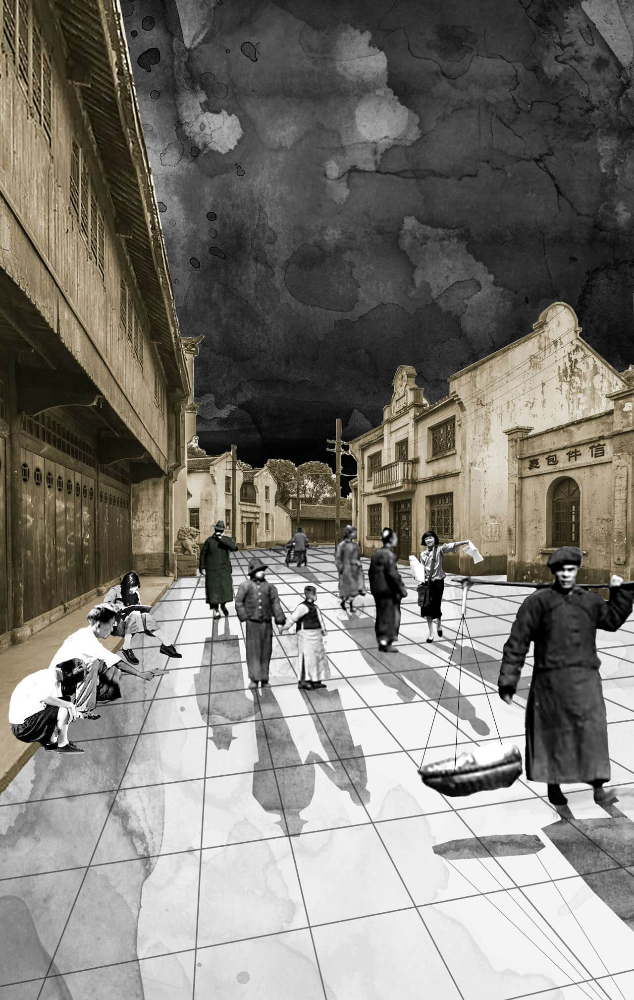
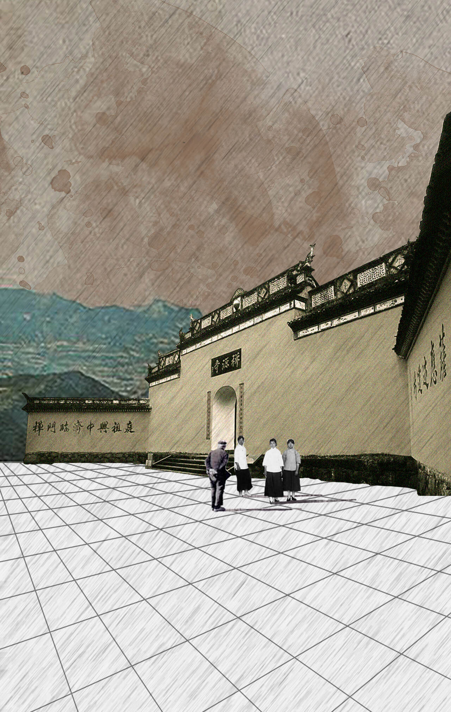

1937年8月，淞沪大战失利，中国前途危亡。家国飘摇之中，你迎来了18岁生日和一张来自浙江大学的录取通知书。

九月十八日，晨微雨，满觉陇桂花盛开。
这是开学第二日，全校师生在细雨中召开了勿忘国耻六周年纪念大会。

11月下旬，浙西告急，仓促间你竟忘了和常喂的求是猫告别，就随着大部队历经五天奔波，迁到了建德。
学校的教室、宿舍分散在建德城内各处，课余饭后，街巷拥挤，每天中午吃饭都像“打仗”似的。你最怕碰到当天的《浙大日报》开售的时候，报童的第一声叫卖声还没喊完，人们就一哄而上争相购买传阅，街上人头攒动，饭都吃不安生。
继续12月24日，杭州沦陷。
好在竺校长早有下一步迁校打算，计划在寒假前撤离建德，迁往江西吉安。
因军运关系，浙赣铁路客货车停运，学校原本的迁移计划也不得不搁置，你和同学们窝在一所小学校里等待下一步的安排。
12月底的南方小城，夜里潮湿寒冷，你们瑟缩一团，冻坐终夜难以入睡。
这时，家人送来了过冬的衣物：
（慎重，你的选择将影响人生轨迹）
寒冷让你难以顾及太多，立刻穿上了厚厚的冬衣。 你看着边上瑟瑟发抖的紫云同学，暗想：哥没有胸肌给你靠，好歹有件外套。几经周折，终抵玉山。这一路疲乏困顿之中，竟已是1938年。
见到一片草地，你就地卧倒沉沉睡去，被路过的竺校长看到，又是心疼又是好笑。
本以为很快就能跟随大部队前往吉安，然战时风云难测，西迁的“大军”再次“搁浅”。
1月7号，竺校长终于带来了前往下一站的火车。
磕磕绊绊，走走停停，西迁的队伍终于到了江西吉安。
2月15日，晨阴湿，晚又雨。
你们告别了美丽的白鹭洲小岛，启赴泰和上田村。听说这儿的书院和藏书楼久富盛名，历代都有许多学子远道负笈而来。
春意渐浓，你也抖擞精神开始了新一年的学习。
在如此纷乱急迫的国内大环境之中，你却在这里过着有条不紊的单纯的学术生活。
继续4月，战场上传来台儿庄大捷的消息，学校里也发生了一件大事：国学大师马一浮先生来到浙大任教了。
这天中午吃饭，隔壁桌的同学神秘兮兮地告诉你，今天马一浮先生讲《论语》，连竺校长都悄悄来听课，端端正正坐在第一排，小学生一样！
继续
上周，你收到一封家书：宝贝，最近时局动荡，法币不断贬值，家中难以为继，望你自谋生路。一筹莫展之时，你突然听说学校开始实行“贷金”制度，家在战区的学生都可以申请以继续学业。

五月，泰和雨不止，难民亦涌入不绝。再这样下去只怕人、水都要泛滥成灾。
在竺校长斡旋下，浙大决定参与进泰和县的防洪、救灾工作中去。
昨天晚上，听说有女生从图书馆门口的小桥上失足落水身亡，没多久，学校就下了一条“死命令”，今年夏天加开游泳课，每位学生都必须学会游泳。
六月底，马当、彭泽失守。恐泰和将不保。
七月七日，七七事变爆发一周年，大学的第一年，倏忽而过。
八月三日，继竺校长次子染上痢疾不治身亡后，张侠魂师母病故。
十日，学校公祭张侠魂，师生痛哭不止。你后来回想起那一幕，好像就是你在浙大最悲壮的一天了。
继续暂驻足，赣江山水，又成别离。
临出发前，你回头看了一眼平时上课的大原书院，竺校长载下的常青柏长高了一点儿，风吹过来，摇摇曳曳，好像也在招手道别。
你和丹阳加入了校内的“呐喊”步行团，徒步前往宜山。你们志在学鲁迅先生“呐喊几声，聊以慰籍那在寂寞里奔驰的勇士，使他不耽于前驱”。